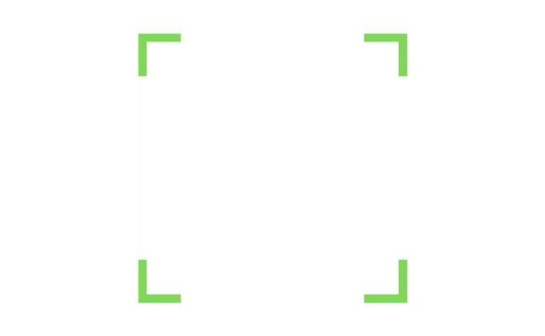

Gestalt - o que é, principais leis e suas aplicações
O que é gestalt?
A gestalt, (ou teoria da forma) é uma corrente de pensamento, que propõe que a simples união das partes não explica o todo.
Conforme um de seus principais autores, Max Wertheimer, a percepção humana é estruturada e organizada e, por isso, não deve ser reduzida a elementos menores.
Entretanto, é possível extrair alguns significados aproximados, como: forma, padrão, configuração ou totalidade.
Para que serve?
Uma das áreas atuais em que a Gestalt tem tido grande sucesso de aplicação é a do Design.
Afinal, se o objetivo dessa especialidade é em construir uma forma, a teoria gestaltista ajuda a entender como ela será recebida pelo público.
Logo, seja para campanhas publicitárias, divulgação ou ilustração, o Design pode se basear nessas ideias para construir imagens que atingirão melhor o seu objetivo.
Além disso, a Gestalt é utilizada também em outros campos, como a da psicologia clínica.
Leis da gestalt
A corrente teórica gestaltista formulou pelo menos 6 leis ou princípios básicos que explicam como a percepção humana funciona e se organiza.
A partir delas, diversos estudos psicológicos já foram realizados. Confira:
Lei da proximidade
Na imagem acima, você vê 12 círculos ou 4 círculos, 6 círculos e 2 círculos?
Provavelmente, a resposta será a segunda opção. Assim, essa lei prevê que tendemos a agrupar os objetos próximos em nossa percepção.
Lei da semelhança
Na lei da semelhança, os objetos parecidos são percebidos juntos.
Na ilustração acima, é provável que você veja duas linhas horizontais de círculos e uma de quadrados, no centro.
Desse modo, ela não é enxergada como um conjunto de linhas verticais com círculos e quadrados intercalados.
Lei da continuidade
A depender do modo como os objetos estão organizados em uma imagem, tendemos a vê-los em um padrão de continuidade.
No exemplo da imagem, a tendência é perceber uma linha de continuidade entre os círculos, ao invés de vê-los separados, cada um posicionado em um ângulo diferente.
Lei do fechamento
Conforme esse princípio, damos aos objetos uma necessidade de completude. Portanto, é fácil enxergar um quadrado na imagem acima, mesmo que ele não exista – ou seja, percebemos o objeto como “incompleto”.
Lei da unidade

Embora na ilustração acima não existam linhas que desenhem um urso panda inteiramente, identificamos perfeitamente o animal, referente ao logo da WWF. Ou seja, a percepção humana tende a unificar o objeto, o que permite também a compreensão de imagens abstratas.
Lei da pregnância
A lei da pregnância é uma das mais conhecidas na Gestalt e é chamada também de lei da simplicidade ou da boa forma.
Assim, há um grau de assimilação melhor de um objeto quando ele é organizado de modo mais simples. Logo, tendemos a formar imagens mais equilibradas, harmoniosas ou com “boa Gestalt”.
Esses são apenas alguns dos princípios que fazem parte da teoria gestaltista. Não obstante, existem outros conceitos teóricos nessa corrente de pensamento que são importantes de serem conhecidos, caso o assunto tenha te interessado.
Exemplos
Para melhor visualizar algumas das leis descritas no tópico anterior, confira uma seleção de imagens que exemplificam esses conceitos gestaltistas
Tente perceber as primeiras impressões e as reações “instintivas” pelas quais as imagens são percebidas:
Essas são apenas algumas imagens que tentam “brincar” com as nossas percepções visuais e que podem tornar mais explícitos os princípios gestaltistas. Contudo, essas leis estão presentes em todo o momento na vida cotidiana, e é interessante ter a consciência desses processos.
gestalt-terapia
A aplicação da perspectiva da Gestalt na psicologia clínica é chamada de Gestalt-terapia. Nesse contexto, a ideia do “todo” é central: a tentativa da psicoterapia é de fazer perceber as partes rejeitadas ou inconscientes do paciente e juntá-las, tornando a pessoa um ser inteiro.
Assim, o objetivo da Gestalt-terapia é de trazer de volta as potencialidades do paciente que estão perdidas e que advêm de sua totalidade. Logo, há outras noções gestaltistas, como a ideia da figura-fundo ou do encontro, que são importantes para a psicoterapia.
O que é interessante de notar é que, em todas as aplicações, a definição central da Gestalt se repete: a de que o todo é diferente da soma de suas partes. Na verdade, a relação entre os elementos – de proximidade, de fechamento, de unidade – constituem a totalidade. Logo, é importante entender a relação do indivíduo com o seu mundo.
Entenda mais sobre a gestalt
Para uma compreensão melhor do assunto, pode ser útil ter o contato com outras pessoas falando e explicando o tema. Assim, você poderá estabelecer outras relações visuais e auditivas com o conteúdo, ampliando seu entendimento:
As principais ideias
No vídeo acima, retome algumas das principais ideias que giram em torno da teoria da Gestalt. A partir dele, será possível destrinchar o tema para outras áreas e campos de atuação possíveis com essa corrente teórica.